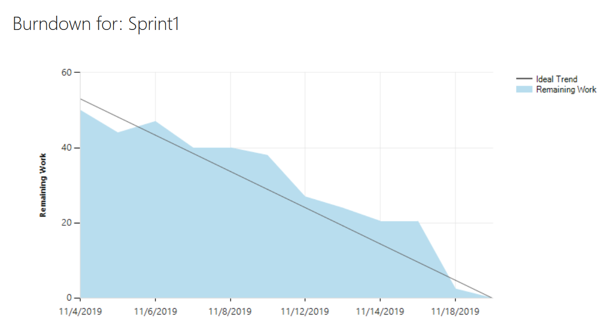

Project Planning
After the initial meetings described in Team Environment, the teams assigned story points to each project. This was done using “tabletop relative estimation” based on the number of external systems and relative complexity of the requirements laid out for each proposal.
During the development of the Nursing Skills Tracker application (NST), product backlogs were used to store a prioritized list of unfinished user stories. In the sprint planning meeting, as a team we would pull out user stories from the product backlog and put them into the sprint’s backlog. During the sprint planning meeting, we would determine the budgeted hours, how many user stories we could complete in the sprint, and the tasks associated with each user story. The time to complete each task was also determined. The prioritized, tasked out user stories were placed in the sprint backlog. An excel version of the NST product backlog can be found here.
Each sprint, a sprint burndown chart would be generated. The sprint burndown shows the team how many hours they should have left to complete the sprint on time. The sprint burndown was generated based on the number of hours planned for the tasks and the duration of the sprint. The y-axis shows the number of hours. The x-axis shows the days. The “ideal trend” line shows how many hours should ideally be left on that date while the “remaining work” line shows how many hours are left on that date. An example of a sprint burndown chart is below.
Status Report
We used Team Foundation Server (TFS) to manage the product and sprint backlogs. Each task had an associated estimated time to completion, remaining work time, and actual completed time. The tasks were assigned to teammates based on priority. Each task would move from various states: new, active, pending review, and then closed. This, along with the associated time attributes always allowed for easy viewing of the task’s status. TFS enabled us to adapt our sizing technique, as we could see how much we initially estimated for a task and how much time the task took to complete.
At the start of each day during a sprint, a daily scrum meeting would take place wherein each team member would answer three questions:
- What did you do since last scrum?
- What are you going to be working on today?
- Is there anything blocking you or do you have any concerns?
This allowed everyone on the team to check in and give a short status report to everyone. Some scrum meetings seemed to be superfluous in cases where the previous day everyone on the team was working on the same thing, such as sprint planning and no tasks had been assigned for that day yet. In these cases, we reduced the questions to the third question.